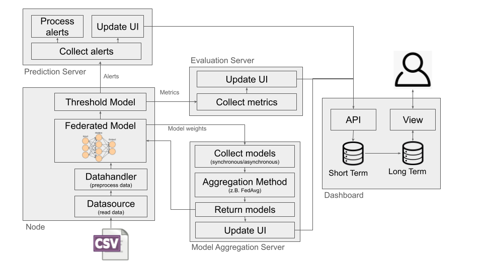

What is DAISY?
A Framework for Fully Distributed, Anomaly-Based Intrusion Detection in Security-Oriented Edge Computing Environments.
DAISY aims to be an end-to-end framework to design, develop, and execute distributed intrusion detection systems (IDS) of varying topologies, in an edge-optimized fashion. All of which is done in python and done generically.
Note
Basically: You provide the model along some data sources, plus any other customizations you want done following the defined interfaces, and you are set!
For the latter, there is a large toolbox of various (example) implementations for all these interfaces. Execution i.e. rollout is done through pure python or wrapped inside one or multiple docker containers.
DAISY Installation & Usage
DAISY supports installation via pip under Python 3.12. It can be installed using the steps below. DAISY is also available via Docker and can be used out of the box after building.
It is generally recommended to use a virtual environment for Python projects.
For CUDA-enabled GPU cards (primarily on Ubuntu and other Linux distributions),
GPU support is available via the [cuda] install option. This requires
NVIDIA® GPU drivers and is supported via
Tensorflow.
For live traffic capture and PCAP file reading, Tshark is required.
git clone https://github.com/daisy-field/daisy.git
# python 3.12 setup
sudo add-apt-repository ppa:deadsnakes/ppa
sudo apt-get update
sudo apt-get install python3.12
# venv setup (recommended)
sudo apt install python3.12-venv
python3.12 -m venv venv
source venv/bin/activate
pip install /path/to/daisy
pip install /path/to/daisy[cuda] # gpu support (optional)
After installation, demo scripts will be added to your shell path and can be executed like:
demo_202303_client -h
model_aggr_server -h
Refer to the instructions to perform the initial demo. A minimum working example is available, including all necessary components for setting up two federated detection nodes, aggregation servers, and a dashboard. Some demos may require external data sources, available in our data set repository.
Developing
DAISY can be installed in editable mode (-e flag) for development purposes. A virtual environment is strongly recommended.
git clone https://github.com/daisy-field/daisy.git
cd daisy
# python 3.12 setup
sudo add-apt-repository ppa:deadsnakes/ppa
sudo apt-get update
sudo apt-get install python3.12
# venv setup
sudo apt install python3.12-venv
python3.12 -m venv venv
source venv/bin/activate
pip install -e .[dev]
This installs all dependencies and development tools (e.g., linters, test frameworks).
To enable automatic commit checks via Git hooks:
pre-commit install
These checks will also run on the upstream repository, so it’s highly recommended to enable them.
Building
Because DAISY is installed via pip -e, code changes take effect immediately. For Docker usage, however, you may need to rebuild image layers:
docker build -t daisy .
docker build -t daisygpu . --build-arg build_version=gpu # gpu support (optional)
To run the Docker container interactively:
docker run -it --network host --name daisy daisy bash
You can also deploy a demo setup, including the minimum working example, using Docker Compose:
# Arg Setup
export DATASET_PATH=/path/to/datasets/v2x_2023-03-06
export BUILD_VERSION=gpu # gpu support (optional)
docker compose -f demos/v2x_2023-03-06.yml up
Note
Once deployed and running, the dashboard will be reachable at http://localhost:8000/.
Minimum Working Example
Example usage of the various components:
dashboard
pred_aggr_server
model_aggr_server
eval_aggr_server
demo_202303_client --clientId 5 --pcapBasePath /path/to/datasets/v2x_2023-03-06 \
--modelAggrServ localhost --updateInterval 5 --evalServ localhost --aggrServ localhost
demo_202303_client --clientId 2 --pcapBasePath /path/to/datasets/v2x_2023-03-06 \
--modelAggrServ localhost --updateInterval 5 --evalServ localhost --aggrServ localhost
Frequently Asked Questions
1. Dashboard not starting (e.g. crossref error)
Try using 127.0.0.1 instead of localhost in the address. Restart the dashboard and try a different browser (Chromium-based browsers are recommended). Disable ad blockers and ensure JavaScript is enabled.
2. Module ‘ml_dtypes’ has no attribute ‘bfloat16’ when starting dashboard
Check the installation of TensorFlow (version and virtual environment).
3. Socket Trying to (re-)establish connection
This may be a Windows-related issue. WSL is recommended. Also check protected folder settings, and restart components or the computer.
4. PCAP files aren’t read
DAISY uses PyShark (which relies on Tshark) for PCAP input. Ensure Tshark is installed and that the code runs with sufficient permissions (e.g., root/admin). On Windows, WSL or Linux may be required. Alternatively, use CSV input, which works independently of PyShark.
5. Live Network traffic isn’t captured
Same as Question 4 — relies on PyShark, so check installation and permissions.
6. Script X isn’t producing any data
Check whether it uses PCAP or live traffic. If so, see Question 4. CSV-based workflows are generally more robust across platforms.